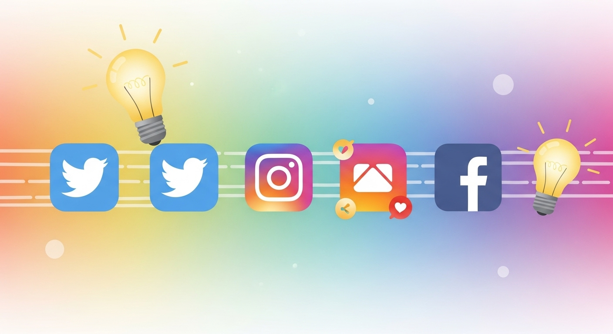
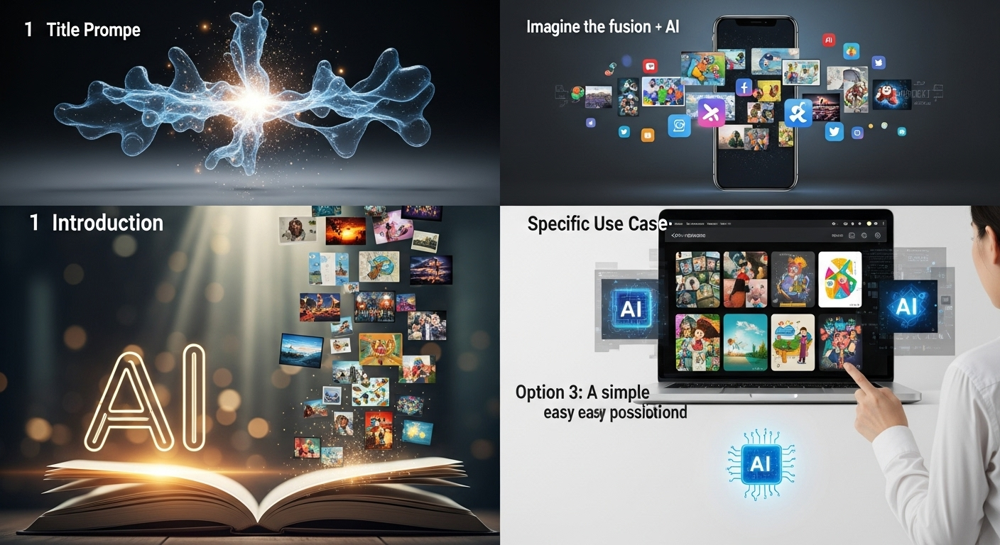
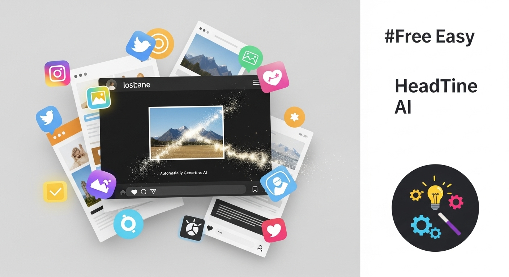
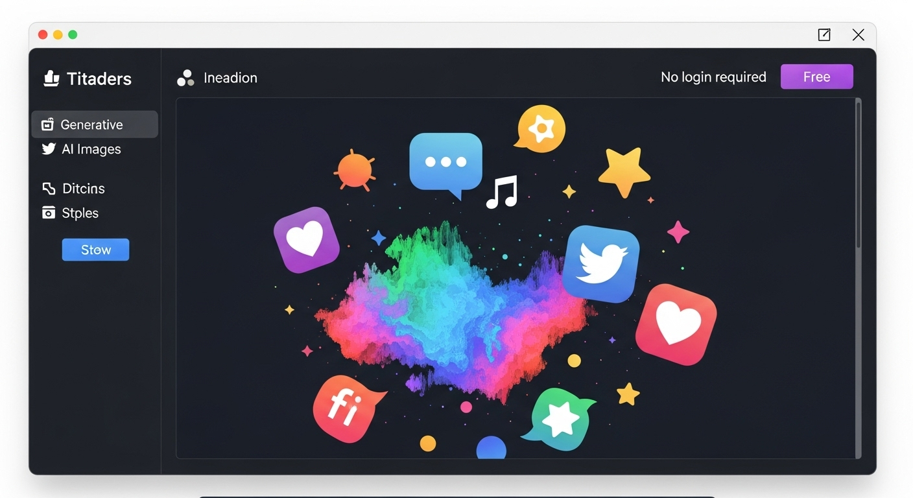
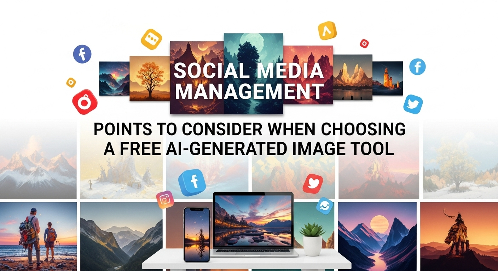
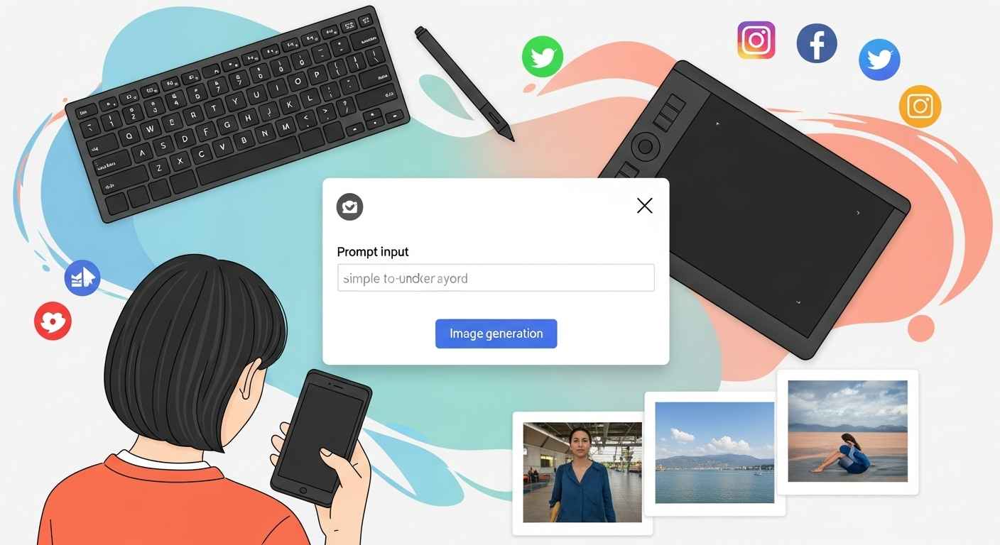
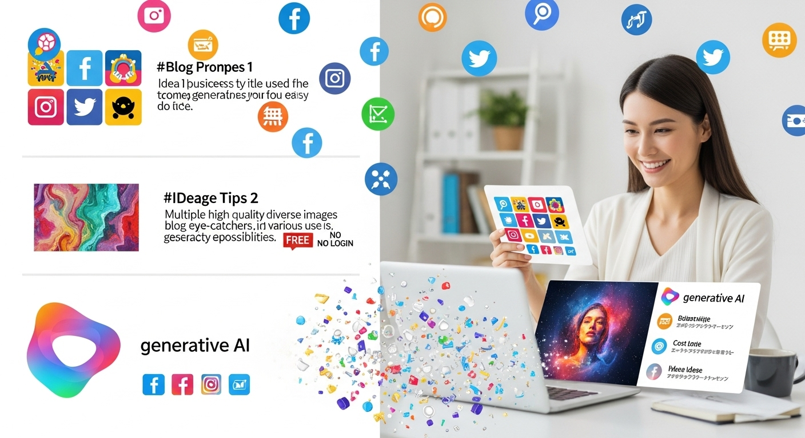
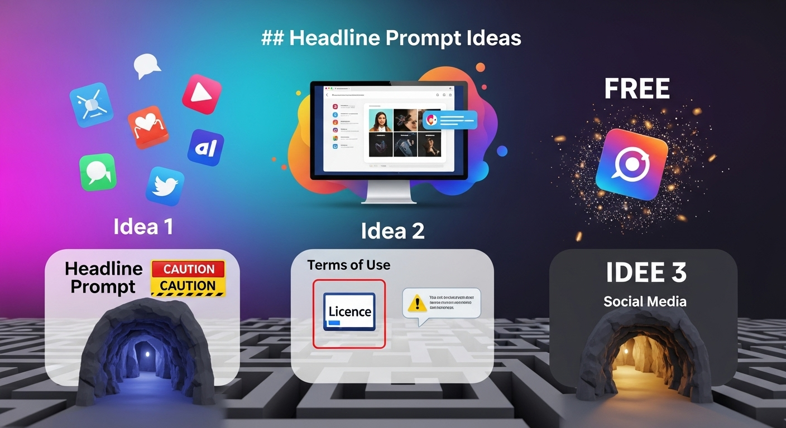

【厳選】生成AI画像無料・ログイン不要！SNS運用に役立つ活用術

導入

現代社会において、SNSは企業活動、ブランド構築、個人間のコミュニケーションにとって不可欠なプラットフォームとなりました。日々、膨大な情報が飛び交う中で、人々の目を引き、心に響くコンテンツを届けることは、SNS運用の成功を左右する重要な鍵となります。そして、そのコンテンツの中でも、視覚的な魅力を持つ「画像」の力は絶大です。一枚の魅力的な画像は、言葉だけでは伝えきれないメッセージを瞬時に伝え、共感を呼び、行動を促す力を持っています。
しかし、SNSで目を引く高品質な画像を継続的に作成することは、多くの担当者様にとって大きな課題となってきました。プロのデザイナーに依頼すれば費用がかさみ、自力で作成しようとすれば専門的なデザインスキルや高度な画像編集ソフトの操作が必要になります。また、日々新しいコンテンツを求められるSNSの特性上、常に新鮮で魅力的な画像を供給し続けることには、時間的、精神的な負担も伴いますます。このような背景から、「もっと手軽に、もっと自由に、高品質な画像を生成できたら…」と願う声は少なくありませんでした。
そんな中、近年急速に進化を遂げ、注目を集めているのが「生成AI画像」です。テキストで指示を与えるだけで、AIが瞬時に多様な画像を生成してくれるこの技術は、画像作成の常識を覆す可能性を秘めています。特に、「無料」で「ログイン不要」で利用できる生成AI画像ツールは、その手軽さとアクセシビリティの高さから、SNS運用に携わる多くの方々にとって、まさに救世主となり得る存在として期待されています。
本記事では、この画期的な生成AI画像を、誰でも気軽に、そして安心してSNS運用に活用できるよう、その全てを網羅的に解説していきます。具体的には、まずSNS画像作成における一般的な課題を整理し、なぜ無料・ログイン不要のAI画像生成が注目されているのかを深掘りします。次に、実際に利用できるおすすめの無料・ログイン不要ツールを厳選してご紹介し、それらを選ぶ際の重要なポイントや基本的な使い方を丁寧に解説します。さらに、AI画像をSNS運用に取り入れることで得られる具体的なメリットと、知っておくべき注意点、そして最大限に活用するための実践的なコツまで、幅広くお伝えしてまいります。
この記事を読み終える頃には、きっとあなたも生成AI画像の無限の可能性を感じ、日々のSNS運用がより楽しく、効率的になることでしょう。デザインスキルに自信がない方や、予算が限られている方も、どうぞご安心ください。生成AI画像は、誰もがクリエイティブな表現を手にするための、優しい扉を開いてくれます。さあ、一緒に新しいSNS画像作成の世界へ足を踏み入れてみましょう。
生成AI画像無料・ログイン不要！SNS画像作成の課題解決

SNS運用において、視覚的なコンテンツの重要性は言うまでもありません。しかし、その重要性が高まるにつれて、多くの運用担当者様が様々な課題に直面しています。ここでは、SNS画像作成における一般的な悩みを共有し、なぜ「登録・ログイン不要のAI画像生成」がその解決策として注目されているのかを深掘りしていきます。
SNS画像作成でこんな悩みはありませんか？
SNS運用は、今や企業やブランド、個人の発信において欠かせない活動です。しかし、魅力的な投稿を継続的に行う上で、特に「画像作成」に関して、多くの方が共通の悩みを抱えています。もし、あなたが以下のような経験をお持ちでしたら、きっとこのセールの話は心に響くはずです。
まず、最もよく聞かれる悩みの一つが「デザインスキルがない、または経験が浅い」というものです。SNSで目を引く画像を作るには、色彩感覚、レイアウト、フォント選びなど、多岐にわたるデザインの知識が求められます。しかし、誰もが専門的なトレーニングを受けているわけではありません。プロのような仕上がりを目指そうとすればするほど、自分には無理だと諦めてしまったり、どこか物足りない、垢抜けない画像になってしまったりと、ジレンマに陥ることは少なくありません。例えば、新商品の告知画像を制作する際、伝えたいメッセージは明確なのに、それを視覚的に魅力的な形で表現するアイデアが浮かばず、結局はありきたりな写真に文字を載せるだけになってしまう、といったケースは頻繁に見受けられます。
次に、「画像作成に時間がかかりすぎる」という問題も深刻です。SNSは鮮度が命。タイムリーな情報発信が求められる一方で、一枚の画像をゼロから作成するには、素材探し、構図の検討、編集作業、そして細かな調整と、想像以上に多くの時間と手間がかかります。特に、複数のプラットフォームで毎日投稿を行うような場合、画像作成だけで一日の大半が費やされてしまい、他の重要な業務に手が回らなくなる、という悪循環に陥ることも少なくありません。イベントの告知やキャンペーンの開始など、緊急性の高い投稿が必要な時に限って、画像制作がボトルネックとなり、機会損失に繋がってしまうケースもあるでしょう。
さらに、「画像作成のコストが高い」という現実も無視できません。プロのデザイナーに依頼すれば当然費用が発生しますし、有料のストックフォトサイトから素材を購入したり、高機能なデザインソフトを導入したりするにもコストがかかります。特に、予算が限られている中小企業や個人事業主、あるいは個人のインフルエンサーの方々にとっては、これらの費用が大きな負担となり、継続的なSNS運用を妨げる要因となりかねません。高品質な画像を妥協なく追求したいけれど、予算の壁にぶつかってしまう、というもどかしい思いをされている方もいらっしゃるでしょう。
他にも、「常に新しいアイデアやユニークな画像が求められる」というプレッシャーも大きな悩みです。SNSは常に新しい刺激を求める場であり、同じようなデザインやテイストの画像を使い続けていると、フォロワーの関心は薄れてしまいます。しかし、無限にアイデアが湧き出てくるわけではありませんし、毎回異なるテイストの画像を一から生み出すのは至難の業です。ネタ切れに陥り、結局は既存のフリー素材に頼ってしまい、結果的に他社や他のアカウントとの差別化が難しくなってしまう、という状況も少なくありません。
これらの悩みは、SNS運用の効果を最大限に引き出す上で、避けては通れない壁のように感じられるかもしれません。しかし、ご安心ください。これらの課題を解決し、もっと自由に、もっと効率的に、そしてもっと魅力的な画像を作成できる画期的な方法が、今、まさに私たちの手の中にあります。その鍵を握るのが、次に詳しくご紹介する「登録・ログイン不要のAI画像生成」なのです。
登録・ログイン不要のAI画像生成が注目される理由
前述したSNS画像作成の様々な課題に直面する中で、「登録・ログイン不要のAI画像生成ツール」が、なぜこれほどまでに注目を集めているのでしょうか。その理由は、まさに現代のSNS運用者が求める「手軽さ」「即時性」「低コスト」を高いレベルで実現している点にあります。
まず、最大の魅力はやはり「圧倒的な手軽さ」です。通常のオンラインサービスやアプリケーションを利用する際には、メールアドレスやパスワードを設定し、アカウントを作成するプロセスが必須です。さらに、氏名や電話番号といった個人情報の入力、時にはクレジットカード情報の登録まで求められることもあります。これらの手続きは、セキュリティ面では必要なことですが、新しいサービスを気軽に試したい、あるいは急いで画像が必要な場合には、少なからず心理的なハードルや手間となります。特に、複数のツールを比較検討したい場合や、一時的にしか利用しない可能性がある場合には、その都度アカウント登録を求められるのは非常に煩わしいものです。
しかし、登録・ログイン不要のAI画像生成ツールは、その名の通り、これらの手続きが一切不要です。インターネットブラウザを開き、指定のURLにアクセスするだけで、すぐに画像の生成を開始できます。この「ワンクリックで始められる」手軽さは、多忙なSNS運用担当者様にとって、まさに革命的と言えるでしょう。思い立った時にすぐにアイデアを形にできる即時性は、SNSのタイムリーな情報発信という特性とも非常に相性が良いのです。
次に、「個人情報入力の手間やセキュリティへの懸念が低い」という点も、注目される大きな理由です。個人情報漏洩のリスクが叫ばれる現代において、見知らぬサービスに個人情報を登録することには、少なからず抵抗を感じる方もいらっしゃるでしょう。その点、ログイン不要のツールであれば、そうした心配はほとんどありません。匿名で利用できるため、安心して様々なプロンプト（指示文）を試し、自由にクリエイティブな表現を追求することができます。これにより、ユーザーはより大胆な発想で画像を生成することが可能となり、結果としてユニークで魅力的なコンテンツが生まれやすくなります。
さらに、これらのツールは多くの場合「無料で利用できる」という大きなメリットを伴います。前述したように、画像作成のコストはSNS運用における大きな課題の一つでした。無料のAI画像生成ツールを活用すれば、デザイン費用や素材購入費用を一切かけることなく、プロ品質の画像を生成することが可能になります。これにより、予算が限られている個人事業主やスタートアップ企業、あるいは学生のプロジェクトなどでも、質の高いビジュアルコンテンツを気軽に活用できるようになるのです。コストを気にすることなく、様々なスタイルの画像を試作できるため、クリエイティブの幅も大きく広がるでしょう。
また、「気軽に試行錯誤できる環境」が提供される点も重要です。AIによる画像生成は、プロンプトの書き方一つで結果が大きく変わるため、何度か試行錯誤を繰り返しながら理想の画像に近づけていくプロセスが不可欠です。登録やログインの手間がないことで、ユーザーは躊躇なく様々なプロンプトを試し、異なるツール間で比較検討することも容易になります。これにより、自分にとって最適なAIモデルやプロンプトの記述方法を効率的に見つけ出すことができるのです。
これらの理由から、登録・ログイン不要のAI画像生成ツールは、SNS画像作成における従来の課題を根本から解決し、誰でも手軽に高品質なビジュアルコンテンツを生み出せる、革新的な手段として大きな注目を集めています。次のセクションでは、実際に利用できる具体的なツールをいくつかご紹介し、その魅力に迫っていきましょう。
登録・ログイン不要！無料で生成AI画像が作れるおすすめツール

SNS運用を効率化し、魅力的なコンテンツを気軽に作成するためには、使いやすく、そして「無料・ログイン不要」という条件を満たすAI画像生成ツールを選ぶことが非常に重要です。ここでは、現時点で多くのユーザーに利用されており、上記の条件に合致する代表的なツールをいくつかご紹介します。それぞれのツールの特徴や得意なこと、簡単な使い方を把握することで、あなたのSNS運用に最適なツールを見つける手助けとなるでしょう。
おすすめツール1：Craiyon (旧DALL-E mini)の概要と機能
まず最初にご紹介するのは、「Craiyon（クレイヨン）」、以前は「DALL-E mini（ダリミニ）」という名称で親しまれていたツールです。このツールは、その手軽さとユニークな画像生成能力で、AI画像生成ブームの火付け役の一つとも言える存在です。
概要と特徴:
Craiyonは、テキストプロンプトに基づいて画像を生成するAIツールで、特にその「ログイン不要」で「完全無料」という点が大きな魅力です。ウェブブラウザからアクセスするだけで、すぐに画像の生成を開始できます。DALL-E miniという名前で知られていた時代から、その実験的な性質と、時に予想外でシュールな画像を生成する能力で多くのユーザーを魅了してきました。
Craiyonの最大の特徴は、非常にシンプルなインターフェースにあります。複雑な設定やオプションはほとんどなく、入力ボックスに生成したい画像のテキスト説明（プロンプト）を入力し、「Draw」ボタンをクリックするだけ。数分待てば、9枚の異なる画像がグリッド形式で表示されます。この手軽さは、AI画像生成の初心者の方や、とにかく気軽に試してみたいという方にとって、非常に大きなメリットとなるでしょう。
得意な画像スタイル:
Craiyonは、写実的な画像よりも、やや抽象的、あるいはイラスト的、カートゥーン的な画像を生成する傾向があります。また、特定のアーティストのスタイルや有名なキャラクターを模倣しようとすると、その特徴を捉えつつも、どこかユニークで風変わりな、Craiyonならではの解釈が加わった画像が生成されることが多いです。この「予測不能性」こそが、Craiyonの魅力であり、時に思わぬ面白い画像を生み出す源泉となっています。例えば、「猫が宇宙飛行士になって月を歩いている絵」のような、現実にはありえないような状況や、空想的なシーンを描写するのに長けています。
具体的な機能:
- テキストプロンプト入力: 英語での入力が推奨されますが、日本語でも試すことは可能です。ただし、英語の方がより意図した通りの結果が得やすい傾向にあります。
- 9枚の画像生成: 一度の生成リクエストで、9枚の異なるバリエーションの画像が生成されます。これにより、様々なアイデアを素早く視覚化し、気に入ったものを選ぶことができます。
- シンプルなダウンロード: 生成された画像は、個別にクリックして拡大表示し、右クリックなどで簡単にダウンロードできます。
SNS運用への活用シーン:
Craiyonは、そのユニークでユーモラスな画像生成能力から、以下のようなSNS運用シーンで特に役立つでしょう。
- エンゲージメント向上: 既存のストックフォトでは見つからないような、奇抜で目を引く画像を投稿することで、フォロワーの関心を引きつけ、コメントやシェアを促すことができます。例えば、クイズ形式の投稿や、季節のイベントに関連した面白いイラストなど、会話のきっかけとなるようなコンテンツに最適です。
- コンセプトイメージの作成: 新しいキャンペーンやイベントの初期段階で、具体的なビジュアルイメージを複数試したい場合に、手軽に多様なアイデアを視覚化できます。
- 遊び心のあるブランドイメージ: 親しみやすく、少しユーモラスなブランドイメージを構築したい場合に、Craiyonで生成したイラストを活用することで、ブランドの個性を際立たせることができます。
- ブログ記事やプレゼンテーションの挿絵: 堅苦しくなりがちな内容に、少し遊び心を加える挿絵として利用することで、読者の興味を引きつけ、内容をより分かりやすく伝えることができます。
利用上の注意点:
Craiyonは非常に便利なツールですが、生成される画像の品質は他の高性能なAIツールと比較すると、やや粗かったり、細部が崩れていたりする場合があります。特に、人物の顔や手の描写は、時に不自然になることがありますので、写実性や完璧なディテールを求める場合には、他のツールとの併用や、生成後の画像編集が必要になることも考慮しておきましょう。また、生成速度はサーバーの混雑状況によって変動し、数分かかることもあります。しかし、その手軽さとユニークさは、多くのユーザーにとって試す価値のあるツールであることは間違いありません。
おすすめツール2：Stable Diffusion Online (Hugging Face Spacesなどのデモ版)の概要と機能
次にご紹介するのは、オープンソースの強力な画像生成AIモデルである「Stable Diffusion（ステーブルディフュージョン）」をオンラインで手軽に体験できるデモ版です。特に、Hugging Face Spaces（ハギングフェイス・スペーシズ）などで公開されているデモは、ログイン不要で利用できるため、AI画像生成の可能性を深く探求したい方におすすめです。
概要と特徴:
Stable Diffusionは、Stability AIが開発した、テキストから画像を生成する拡散モデルです。その最大の特徴は、高い生成品質と多様な表現力にあります。オープンソースであるため、世界中の開発者や研究者によって様々な派生モデルやツールが開発されており、非常に活発なコミュニティが存在します。
Hugging Face Spacesなどで提供されているStable Diffusionのオンラインデモ版は、この強力なAIモデルの機能を、ユーザーが自身のPCに環境を構築することなく、ブラウザ上で直接体験できるようにしたものです。これらのデモ版は、通常、ログイン不要で無料で利用できますが、サーバーのリソース制限や生成回数に上限が設けられている場合があります。
得意な画像スタイル:
Stable Diffusionは、写実的な写真のような画像から、イラスト、アニメ、油絵、水彩画、サイバーパンク風、ファンタジーアートなど、非常に幅広いスタイルに対応できる汎用性の高さが魅力です。プロンプトの記述次第で、特定のアーティストの画風を模倣したり、特定の被写体を様々な状況で描かせたりすることが可能です。例えば、「夕焼けに染まる古城、ファンタジーアート、詳細な描写、黄金の光」といったプロンプトを入力すれば、幻想的な風景画を生成できますし、「高層ビル群を背景に立つビジネスマン、ポートレート、映画のような照明、高精細写真」といったプロンプトでは、プロフェッショナルなイメージ写真を生成することも可能です。
具体的な機能:
- テキストプロンプト入力: 英語での入力が推奨されます。プロンプトの記述が詳細であればあるほど、意図した通りの画像を生成しやすくなります。
- ネガティブプロンプト: 「〇〇を含まないでほしい」という指示を出すことで、生成される画像の品質を向上させたり、不要な要素を除去したりできます（例: 「bad anatomy, deformed, ugly」など）。
- 画像生成枚数とバリエーション: デモ版によって異なりますが、一度に数枚の画像を生成し、その中から選ぶことができます。
- 各種パラメータ調整: モデルによっては、アスペクト比（縦横比）、ステップ数（生成品質に影響）、CFGスケール（プロンプトへの忠実度）などの詳細なパラメータを調整できる場合があります。これにより、より細かく画像の生成をコントロールすることが可能です。
- ダウンロード: 生成された画像は、高解像度でダウンロードできることが多く、SNSでの利用に十分な品質を確保できます。
SNS運用への活用シーン:
Stable Diffusionのデモ版は、その高い品質と多様な表現力から、幅広いSNS運用シーンで活躍します。
- 高品質なビジュアルコンテンツの作成: プロモーション画像、イベント告知、ブログ記事のアイキャッチなど、プロフェッショナルな印象を与えたい投稿に最適です。
- ブランドイメージに合わせた統一感のある画像: 特定のスタイルやテーマを設定し、それに沿った画像を複数生成することで、SNSアカウント全体のビジュアルに統一感を持たせることができます。
- 複雑なコンセプトの視覚化: 抽象的なアイデアや、言葉だけでは伝わりにくいコンセプトを、魅力的なビジュアルとして表現するのに役立ちます。例えば、未来的なテクノロジーや、新しいライフスタイルを提案するような投稿に適しています。
- A/Bテスト用の画像生成: 同じメッセージを伝える複数の異なるスタイルの画像を生成し、どちらがより高いエンゲージメントを得られるかをテストする際に、効率的にバリエーションを作成できます。
利用上の注意点:
Stable Diffusionのデモ版は非常に強力ですが、サーバーの負荷が高まると、生成に時間がかかったり、一時的に利用できなくなったりすることがあります。また、無料版では高性能なモデルや最新の機能が制限されている場合もあります。プロンプトの書き方にはある程度の慣れが必要ですが、インターネット上には多くのプロンプト例やガイドが存在するため、それらを参考にしながら試行錯誤することで、驚くほど高品質な画像を生成できるようになるでしょう。その学習コストを差し引いても、得られる成果は非常に大きいと言えます。
おすすめツール3：Pixlr AI Image Generatorの概要と機能
最後に紹介するのは、オンライン画像編集ツールとして広く知られるPixlrが提供する「Pixlr AI Image Generator（ピクセラ エーアイ イメージ ジェネレーター）」です。Pixlrはもともと高機能なオンラインフォトエディターとして有名ですが、そのAI画像生成機能もログイン不要で手軽に利用できる点が魅力です。
概要と特徴:
Pixlr AI Image Generatorは、Pixlrのウェブサイト内で提供されているAI画像生成機能で、直感的な操作性が特徴です。他のPixlrの編集ツールとシームレスに連携できるため、画像を生成した後に、そのままPixlr Editorで微調整や加工を加えたい場合に非常に便利です。ログイン不要で利用開始できるため、初めてAI画像生成を試す方でも、迷うことなくスムーズに利用できるでしょう。
このツールの大きな利点は、生成された画像をその場でさらに編集できるという、画像生成と編集の連携にあります。これは、生成AI画像が完璧ではない場合が多いという特性を考えると、非常に実用的な機能と言えます。
得意な画像スタイル:
Pixlr AI Image Generatorは、比較的写実的な画像から、イラスト、デジタルアート、コンセプトアートなど、幅広いスタイルに対応しています。特に、写真のような質感を持つ画像を生成する能力も高く、SNSで目を引くような美しい風景写真や、商品のイメージ写真、人物のポートレート風画像などを手軽に作成したい場合に力を発揮します。また、プロンプトに「digital art」「fantasy」「anime style」などのキーワードを含めることで、様々なアートスタイルを表現することも可能です。
具体的な機能:
- テキストプロンプト入力: 英語でのプロンプト入力が基本ですが、日本語でも試すことができます。より具体的な指示を与えることで、望む結果に近づけることができます。
- スタイル選択: 生成したい画像のスタイル（例: 「Photo」「Art」「Anime」「3D」など）をプリセットから選択できる場合があります。これにより、プロンプトにスタイルを指定する手間を省き、簡単に希望のテイストの画像を生成できます。
- アスペクト比選択: 正方形、横長、縦長など、SNSプラットフォームの推奨アスペクト比に合わせて生成画像のサイズを事前に指定できます。
- バリエーション生成: 一度に数枚の異なる画像を生成し、その中から最適なものを選ぶことができます。
- Pixlr Editorとの連携: 生成された画像は、ワンクリックでPixlr Editorに読み込み、トリミング、色調補正、テキスト追加、フィルター適用などの詳細な編集を行うことが可能です。これは、無料のAI画像生成ツールの中では非常にユニークで強力な機能と言えるでしょう。
- ダウンロード: 生成された画像は、高解像度でダウンロード可能で、SNS投稿にすぐに利用できます。
SNS運用への活用シーン:
Pixlr AI Image Generatorは、特に以下のようなSNS運用シーンでその真価を発揮します。
- 商品・サービスのイメージ画像: 新商品の紹介やサービスの魅力を伝える際に、高品質なイメージ画像を迅速に生成し、必要に応じてPixlr Editorでロゴの追加やキャッチコピーの挿入を行うことができます。
- 季節のイベントやキャンペーン画像: ハロウィン、クリスマス、バレンタインデーなどの季節イベントや、特定のキャンペーンに合わせたビジュアルを、手軽に、かつプロフェッショナルな仕上がりで作成できます。
- ブログ記事のアイキャッチ画像: 記事の内容を視覚的に表現する魅力的なアイキャッチ画像を、記事のテーマに合わせて自由に生成し、必要に応じて文字入れなども行えます。
- SNS広告クリエイティブの試作: 複数の異なるデザインの広告画像を迅速に生成し、効果的なクリエイティブを効率的に見つけ出すためのA/Bテストに活用できます。
利用上の注意点:
Pixlr AI Image Generatorの無料版では、生成回数に制限があったり、生成速度が有料版に比べて遅かったりする場合があります。また、より高度な編集機能や、広告の非表示化を求める場合は、Pixlrの有料プランへの登録が必要になることもあります。しかし、基本的な画像生成と簡単な編集であれば、ログイン不要の無料版でも十分に活用することが可能です。オンライン画像編集ツールとしての実績があるため、初心者の方でも安心して利用できるでしょう。
これらのツールは、それぞれ異なる強みと特徴を持っています。ご自身のSNS運用の目的や、求める画像のスタイル、そして使いやすさなどを考慮して、最適なツールを選んでみてください。複数のツールを試してみて、それぞれの得意分野を把握することも、AI画像生成を最大限に活用する上での重要なステップとなるでしょう。
無料生成AI画像ツールを選ぶ際のポイント

無料かつログイン不要で利用できる生成AI画像ツールは、SNS運用における強い味方ですが、その種類は多岐にわたり、それぞれ特徴が異なります。数あるツールの中から、ご自身の目的やニーズに最適なものを選ぶためには、いくつかの重要なポイントを考慮する必要があります。ここでは、ツール選びの際に注目すべき4つのポイントを詳しく解説していきます。
選び方１．生成できる画像のクオリティとスタイル
AI画像生成ツールを選ぶ際、最も根本的で重要なのが、そのツールが「どのようなクオリティで、どのようなスタイルの画像を生成できるか」という点です。SNS運用において、画像のクオリティはフォロワーのエンゲージメントに直結するため、非常に慎重に検討する必要があります。
まず、「画像のクオリティ」とは、生成される画像の解像度、細部の描写力、色彩の豊かさ、そして全体の整合性を指します。無料ツールの場合、有料ツールや高スペックなローカル環境で動作するAIモデルと比較すると、生成される画像の解像度が低かったり、細部がぼやけていたり、あるいは不自然な部分（特に人物の顔や手足など）が生じやすい傾向にあります。しかし、ツールによっては、無料版でも十分SNS投稿に耐えうる高解像度で、かつディテールまでしっかり表現された画像を生成できるものも存在します。
具体的に確認すべきは、サンプルの生成画像です。各ツールのウェブサイトには、そのAIが生成したサンプル画像が掲載されていることがほとんどです。これらのサンプルをじっくりと見て、自分が求めている画像のレベルに達しているか、特に人物、風景、物体など、投稿したい主要な被写体がどのように描かれているかをチェックしましょう。細部の描写が甘いと感じる場合は、その画像をSNSに投稿した際に、プロフェッショナルな印象を与えることができるか、あるいはフォロワーに違和感を与えないか、といった視点で検討することが大切です。
次に、「生成できる画像のスタイル」も非常に重要な選択基準です。AI画像生成ツールには、それぞれ得意とするスタイルがあります。
- 写実的な写真風（Photorealistic）: 実際の写真と見分けがつかないような、リアルな画像を生成するのに長けたツール。商品紹介や、実在する風景を彷彿とさせる画像を作成したい場合に適しています。
- イラスト・アニメ風（Illustration / Anime Style）: 漫画やアニメのような、特徴的なタッチの画像を生成するツール。キャラクターコンテンツや、親しみやすいブランドイメージを構築したい場合に有効です。
- アート風（Artistic / Stylized）: 油絵、水彩画、デッサン、サイバーパンク、ファンタジーアートなど、特定の芸術様式やコンセプトアートのような画像を生成するツール。個性的で独創的な表現を追求したい場合に力を発発揮します。
- 3Dレンダリング風（3D Rendering）: 3Dモデリングソフトで作成したかのような、立体感のある画像を生成するツール。ゲームの世界観や、近未来的なデザイン表現にマッチします。
ご自身のSNSアカウントがどのようなブランドイメージを目指しているのか、どのようなターゲット層に向けて発信しているのかによって、最適なスタイルは異なります。例えば、ファッションブランドのアカウントであれば写実的な写真風の画像が求められるかもしれませんし、ゲーム関連のアカウントであればアニメやファンタジーアート風の画像が適しているでしょう。
ツールを選ぶ際には、まずご自身のSNS運用におけるビジュアルコンセプトを明確にすることが先決です。そして、そのコンセプトに合致するスタイルを高いクオリティで生成できるツールを選ぶようにしましょう。複数のツールを実際に試してみて、同じプロンプト（指示文）を入力した際に、どのような画像が生成されるかを比較検討することも非常に有効な方法です。時には、特定のテーマや投稿内容に合わせて、複数のツールを使い分けるという選択肢も視野に入れると、より柔軟で魅力的なSNS運用が可能になります。
選び方２．商用利用の可否と著作権について
無料の生成AI画像ツールを活用する上で、最も注意深く確認すべき点が「商用利用の可否と著作権」に関する規定です。SNS運用は、企業やブランドのプロモーション、商品販売、サービス紹介など、営利目的で行われることがほとんどであるため、この点は決して軽視できません。
まず、「商用利用の可否」についてです。多くの無料AI画像生成ツールは、個人利用であれば自由に画像を生成・使用することを許可していますが、商用利用に関しては異なる規定を設けています。
- 商用利用が完全に禁止されているケース: 最も厳格なパターンです。生成した画像を、たとえ無償であっても、企業アカウントのSNS投稿や広告、商品パッケージ、ウェブサイトなどに使用することはできません。
- 特定の条件下で商用利用が許可されるケース:
- クレジット表記の義務: 画像を使用する際に、ツールの名称や開発元の名前を明記する必要がある場合。
- 生成枚数や期間の制限: 無料版では一定枚数までしか商用利用できない、あるいは特定の期間を過ぎると商用利用権が失効する、といった制限がある場合。
- 有料プランへのアップグレード: 商用利用を希望する場合は、有料プランへの登録を促されるケース。
- 特定の用途に限定: 例えば、SNS投稿はOKだが、商品デザインや広告バナーには使用不可、といった具体的な制限がある場合。
- 商用利用が比較的自由に許可されるケース: 一部のオープンソースベースのツールや、比較的寛容なポリシーを持つツールでは、無料版でも商用利用が許可されている場合があります。しかし、この場合でも、後述する著作権の問題は残ります。
これらの規定は、各ツールの「利用規約（Terms of Service）」や「FAQ（よくある質問）」ページに必ず記載されています。利用を開始する前に、必ずこれらの文書を隅々まで確認し、ご自身のSNS運用の目的と合致しているかを判断することが不可欠です。もし不明な点があれば、ツールのサポートに直接問い合わせることも検討しましょう。確認を怠り、規定に違反して商用利用を行った場合、損害賠償請求やブランドイメージの毀損など、重大なトラブルに発展する可能性があります。
次に、「著作権」についてです。生成AIによって作成された画像の著作権は、現在のところ、法的な解釈が国や地域によって異なり、非常に複雑で議論の余地がある問題です。一般的には、以下の3つのパターンが考えられます。
- AI開発元に帰属: AIが生成した画像は、そのAIを開発・運用している企業や団体に著作権があるとする考え方。
- プロンプト入力者に帰属: 画像を生成するためにプロンプト（指示文）を入力したユーザーに著作権があるとする考え方。これは、ユーザーの創造的な意図が反映されていると見なされる場合です。
- 著作権が発生しない: AIが自律的に生成した画像には、人間の創作性が介在していないため、著作権そのものが発生しないとする考え方。この場合、画像はパブリックドメインとなり、誰でも自由に利用できます。
無料のAI画像生成ツールの場合、多くは1.または3.のパターンに該当するか、あるいは利用規約で「生成された画像の著作権はAI開発元に帰属し、ユーザーは特定の条件下での利用権を得る」と定めていることが多いです。また、AIが学習したデータセットに既存の著作物が含まれている場合、生成された画像が既存の著作物に酷似してしまう「著作権侵害」のリスクもゼロではありません。
SNS運用担当者様としては、これらのリスクを十分に理解し、「生成された画像が完全にオリジナルであるとは限らない」という認識を持つことが重要です。特に、著作権が不明瞭な画像を商用目的で使用する際には、細心の注意を払いましょう。
対策として:
- 利用規約を徹底的に確認する。 これが最も基本的なルールです。
- 商用利用が許可されているツールを選ぶ。 特に明記されていない場合は、使用を避けるか、問い合わせて確認しましょう。
- 生成された画像をそのまま使わず、加工や編集を加える。 これにより、オリジナリティを高め、著作権侵害のリスクを低減できる可能性があります。
- 既存の有名キャラクターやブランドロゴ、著作物と酷似するようなプロンプトは避ける。
- 万が一に備え、有料の商用利用可能なAI画像生成サービスや、著作権フリーのストックフォトサイトも検討する。
SNS運用は企業の顔となる活動です。著作権トラブルは、ブランドイメージを著しく損ない、信頼を失う原因となりかねません。無料ツールを活用する際は、その手軽さだけでなく、法的な側面もしっかりと考慮し、賢明な判断を下すように心がけましょう。
選び方３．直感的な操作性と日本語対応
AI画像生成ツールを選ぶ際のもう一つの重要なポイントは、「直感的な操作性」と「日本語対応」の有無です。特に、デザインスキルやプログラミング知識がないSNS運用担当者様にとって、これらの要素はツールの使いやすさ、ひいては継続的な利用に大きく影響します。
まず、「直感的な操作性（UI/UX）」についてです。どんなに高性能なAIモデルを搭載していても、その操作方法が複雑で分かりにくければ、ユーザーは使いこなすことができません。特に、無料・ログイン不要のツールは、気軽に試せるという特性上、すぐに使い始められるシンプルなインターフェースが求められます。
- 入力フォームの分かりやすさ: プロンプト（指示文）を入力するテキストボックスがどこにあるか、他の設定項目（スタイル、アスペクト比など）がどこに配置されているかなど、画面全体のレイアウトが直感的であるかを確認しましょう。
- プレビュー機能の有無: プロンプトを入力した後に、生成される画像のイメージをある程度予測できるようなプレビュー機能や、過去の生成履歴を確認できる機能があると、試行錯誤がしやすくなります。
- ボタンやアイコンの明確さ: 「生成」「ダウンロード」「リセット」などの主要なボタンが、視覚的に分かりやすく配置されているか、その機能がアイコンやテキストで明確に示されているかを確認します。
- ステップバイステップのガイド: 初めて利用するユーザー向けに、簡単なチュートリアルやヘルプメッセージが表示されるツールは、学習コストが低く、すぐに使いこなせるようになるでしょう。
理想は、特別な説明書を読むことなく、画面を見ただけで次に何をすべきかが分かるようなデザインです。これにより、画像生成にかかる時間だけでなく、ツールの使い方を学ぶ時間も大幅に短縮でき、SNS運用の効率化に直結します。
次に、「日本語対応」の有無も非常に重要な要素です。AI画像生成において、プロンプトはAIに意図を伝えるための最も重要な手段です。
- 日本語プロンプト対応: ツールが日本語のプロンプトを直接理解し、画像を生成できるかどうかは大きな違いです。英語でのプロンプト入力が基本のツールが多いですが、日本語で指示できるツールであれば、翻訳の手間が省け、より自然な言葉でイメージを伝えられます。ただし、日本語対応ツールであっても、英語の方がより細かなニュアンスや専門用語を正確に伝えられる場合があるため、両方を試してみる価値はあります。
- インターフェースの日本語化: ツール自体のメニューやボタン、説明文が日本語で表示されているかどうかも、使いやすさに大きく影響します。英語が苦手な方にとっては、日本語化されているだけで心理的なハードルが大きく下がり、安心して利用できるでしょう。
- ヘルプやFAQの日本語化: トラブルが発生した際や、より高度な機能を使いたい場合に、日本語のヘルプドキュメントやFAQが用意されていると、問題解決がスムーズになります。
日本語対応が進んでいるツールは、日本のユーザーにとって非常に親しみやすく、学習コストも低く抑えられます。特に、プロンプトの記述に慣れていない初心者の方にとっては、日本語で自由に言葉を紡ぎながら画像を生成できる環境は、クリエイティブな発想を妨げない上で非常に有利です。
ツールを選ぶ際には、実際にウェブサイトにアクセスし、デモ版を触ってみることを強くおすすめします。プロンプトを入力し、いくつかの画像を生成してみて、その操作感や日本語の認識精度を体験してみてください。直感的でストレスなく利用できるツールこそが、SNS運用の継続的なパートナーとしてふさわしいと言えるでしょう。
選び方４．生成速度と枚数制限
無料の生成AI画像ツールを選ぶ上で、見落とされがちですが非常に重要なのが、「生成速度」と「枚数制限」です。SNS運用はスピードが求められる場面も多く、これらの要素は効率性や柔軟性に直結します。
まず、「生成速度」についてです。AIによる画像生成は、プロンプトの複雑さやAIモデルの性能、そしてサーバーの負荷状況によって、完了までの時間が大きく変動します。
- 高速生成: プロンプトを入力してから数秒〜数十秒で画像が生成されるツールは、アイデアが浮かんだらすぐに形にしたい場合や、複数のバリエーションを素早く試したい場合に非常に有利です。SNSのトレンドは移り変わりが早いため、タイムリーな投稿を行うためには、素早い画像生成能力が求められます。
- 低速生成: 一方、数分から、場合によっては10分以上かかるツールもあります。このようなツールは、急ぎの投稿には不向きですが、時間をかけてじっくりと理想の画像を追求したい場合や、生成中に他の作業を進められる場合は許容できるかもしれません。無料版のツールは、有料版に比べて意図的に生成速度を制限しているケースも少なくありません。
特に、SNSのキャンペーン期間中や、緊急性の高いニュースを投稿する際など、迅速な画像供給が求められる状況では、生成速度の遅さがボトルネックとなり、機会損失に繋がる可能性もあります。ツールを選ぶ際には、実際にいくつかプロンプトを入力してみて、平均的な生成速度を把握しておくことが重要です。また、時間帯によってサーバーの混雑具合が異なり、生成速度が変動することもあるため、様々な時間帯で試してみるのも良いでしょう。
次に、「枚数制限」についてです。無料のAI画像生成ツールは、その多くが生成できる画像の枚数に制限を設けています。これは、サーバーリソースの消費を抑えるためや、有料プランへの誘導を目的としていることが一般的です。
- 1日の生成枚数制限: 「1日〇枚まで」といった形で、24時間あたりの生成回数が制限されているケースが最も一般的です。この制限を超えると、その日はもう画像を生成できなかったり、有料プランへのアップグレードを求められたりします。
- 連続生成の制限: 短時間での連続生成を制限し、一定時間（例: 5分）が経過しないと次の生成ができないといったクールダウン期間が設けられている場合もあります。
- クレジット制: 無料で一定量の「クレジット」が付与され、画像生成ごとにクレジットを消費する形式のツールもあります。クレジットがなくなると、追加で購入するか、翌日まで待つ必要があります。
- ウォーターマーク（透かし）: 無料版で生成された画像に、ツールのロゴなどのウォーターマークが挿入されるケースもあります。SNSで利用する際には、ブランドイメージを損なわないか、あるいはウォーターマークが目立ちすぎないかを考慮する必要があります。
SNS運用においては、一枚の画像で決まることは少なく、複数のバリエーションを試したり、投稿内容に合わせて様々な画像を生成したりすることが頻繁に発生します。例えば、A/Bテストのために異なるデザインの画像を複数用意したい場合や、シリーズ投稿のために統一感のある画像を連続して生成したい場合など、枚数制限が厳しいと、作業が中断されたり、効率が著しく低下したりする可能性があります。
ツールを選ぶ際には、ご自身のSNS運用のペースや、一度に必要となる画像の枚数を考慮し、無理なく利用できる枚数制限のツールを選ぶことが大切です。もし、日常的に大量の画像が必要となるのであれば、無料版の制限を超えて利用できる有料プランを検討するか、複数の無料ツールを併用するといった戦略も有効です。
生成速度と枚数制限は、ツールの「使い勝手」を大きく左右する要素です。これらのポイントをしっかりと把握し、ご自身のSNS運用スタイルに合った最適なツールを見つけることで、よりストレスなく、効率的にAI画像生成の恩恵を享受できるでしょう。
無料生成AI画像ツールの基本的な使い方

生成AI画像ツールは、一見すると難しそうに感じるかもしれませんが、基本的な使い方は非常にシンプルです。ここでは、無料・ログイン不要のAI画像生成ツールに共通する一般的な操作の流れを、初心者の方にも分かりやすく、ステップバイステップで解説していきます。この手順を参考に、ぜひ実際にツールを触ってみてください。
流れ１．ツールへのアクセスと初期設定
AI画像生成の旅は、まずツールへのアクセスから始まります。無料・ログイン不要のツールは、その手軽さが最大の魅力ですので、安心して第一歩を踏み出しましょう。
1. ツールへのアクセス:
最初に行うべきは、利用したいAI画像生成ツールのウェブサイトにアクセスすることです。インターネットブラウザ（Google Chrome, Firefox, Safariなど）を開き、検索エンジンで「AI 画像生成 無料 ログイン不要」といったキーワードで検索するか、本記事で紹介した具体的なツール名（例: Craiyon, Stable Diffusion Online Demo, Pixlr AI Image Generator）を直接入力してアクセスします。
ウェブサイトに到着したら、まず画面全体を見渡してみましょう。多くの場合、画面の中央や上部にテキスト入力欄が大きく表示されているはずです。これが、AIに生成したい画像を指示するための「プロンプト入力欄」です。
2. 画面構成の簡単な把握:
初めてのツールでは、どこに何があるか戸惑うかもしれません。しかし、無料のAI画像生成ツールは、シンプルさを追求しているものが多いため、主要な要素は限られています。
- プロンプト入力欄: 最も重要な部分。ここに生成したい画像のテキスト指示を入力します。
- 生成ボタン: プロンプトを入力した後、画像生成を開始するためのボタンです。多くの場合、「Generate」「Draw」「Create」といった名前が付けられています。
- 設定オプション: プロンプト入力欄の近くや、画面のサイドバーなどに、画像のスタイル、アスペクト比（縦横比）、ネガティブプロンプト（除外したい要素）などを設定するオプションがある場合があります。
- 生成結果表示エリア: 画像が生成された後に、その結果が表示されるスペースです。
- ダウンロードボタン: 生成された画像を保存するためのボタンです。
3. 初期設定（スタイル・アスペクト比の選択など）:
多くのツールでは、プロンプトを入力する前に、いくつかの初期設定を行うことで、より意図に近い画像を生成することができます。
- スタイル選択: 「写真」「イラスト」「油絵」「アニメ」など、生成したい画像の全体的なテイストを選択するオプションがある場合があります。この選択は、AIが画像を生成する際の方向性を大きく左右するため、非常に重要です。例えば、SNSで商品のリアルなイメージを伝えたい場合は「写真」スタイルを、親しみやすい雰囲気を出したい場合は「イラスト」スタイルを選ぶ、といった具合です。
- アスペクト比（縦横比）の設定: SNSプラットフォームによって、最適な画像のアスペクト比は異なります。例えば、Instagramのフィード投稿では正方形（1:1）や縦長（4:5）、X（旧Twitter）では横長（16:9）がよく使われます。事前にアスペクト比を設定できるツールであれば、生成後に手動でトリミングする手間を省けます。
- ネガティブプロンプトの入力欄: 「含まないでほしい要素」を指示する特別な入力欄がある場合、ここにあらかじめ「ugly, deformed, low quality」といった一般的なネガティブプロンプトを入力しておくことで、生成画像の品質を向上させることができます。
これらの初期設定は、必ずしも全てのツールに存在するわけではありませんが、もし利用できる場合は、プロンプト入力の前に適切に設定しておくことで、より効率的に、そして高品質な画像を生成するための土台を築くことができます。
初めての利用で戸惑うこともあるかもしれませんが、まずは気軽に触ってみることが大切です。設定を色々変えてみて、どんな画像が生成されるかを試すことで、ツールの特性やAIの挙動を自然と理解できるようになります。
流れ２．プロンプト（指示文）の入力方法
AI画像生成における最もクリエイティブで重要なステップが、この「プロンプト（指示文）の入力」です。プロンプトは、AIにあなたの頭の中にあるイメージを伝えるための「魔法の言葉」であり、その質が生成される画像の品質と精度を大きく左右します。
1. プロンプトの基本：キーワードの羅列から始める
最初は難しく考える必要はありません。生成したい画像の中心となる要素を、単語や短いフレーズで羅列するところから始めましょう。
例:
- 「cat, futuristic city, neon light」 （猫、未来都市、ネオンライト）
- 「forest, morning, fog, fantasy art」 （森、朝、霧、ファンタジーアート）
- 「coffee cup, desk, laptop, cozy atmosphere」 （コーヒーカップ、机、ノートパソコン、居心地の良い雰囲気）
2. 具体性と詳細さを加える
AIは、あなたが想像している以上に、具体的な情報から画像を生成します。キーワードを並べるだけでなく、そのキーワードがどのような状態であるか、どのような場所にあるか、どのような雰囲気か、といった詳細な情報を加えることで、より意図に近い画像を生成できます。
具体例の追加:
- 「fluffy cat, tall buildings, flying cars, futuristic city, vibrant neon light, rainy night」
- （ふわふわの猫、高いビル、空飛ぶ車、未来都市、鮮やかなネオンライト、雨の夜）
- 「ancient, mystical forest, golden morning light, thick fog, enchanted, fantasy art, high detail」
- （古代の、神秘的な森、黄金の朝の光、濃い霧、魔法がかかった、ファンタジーアート、高精細）
- 「steaming coffee cup, wooden desk, open laptop, warm, soft lighting, cozy atmosphere, bookshelf in background」
- （湯気の立つコーヒーカップ、木製の机、開いたノートパソコン、暖かく柔らかな照明、居心地の良い雰囲気、背景に本棚）
このように、形容詞や追加の要素、状況説明を加えることで、AIの解釈の幅を狭め、より具体的なイメージに近づけることができます。
3. スタイルや画風を指定する
特定の画風やアートスタイルを求めている場合は、それらをプロンプトに含めることで、生成される画像の雰囲気をコントロールできます。
スタイル指定の例:
- 「cat, futuristic city, neon light, cyberpunk art」 （サイバーパンクアート）
- 「forest, morning, fog, fantasy art, oil painting」 （油絵）
- 「coffee cup, desk, laptop, cozy atmosphere, photorealistic」 （写真のようにリアルに）
有名なアーティストの名前や特定の画家のスタイル（例: 「in the style of Van Gogh」）を指定することも可能ですが、著作権や利用規約に注意が必要です。
4. ネガティブプロンプトを活用する
多くのツールには、生成してほしくない要素を指示する「ネガティブプロンプト」の入力欄があります。これを利用することで、生成画像の品質を向上させたり、不要な要素を排除したりできます。
一般的なネガティブプロンプトの例:
- 「ugly, deformed, low quality, bad anatomy, missing limbs, extra limbs, watermark, text, blurry, distorted」
- （醜い、変形した、低品質、不自然な解剖学、手足の欠損、余分な手足、ウォーターマーク、テキスト、ぼやけた、歪んだ）
これらの言葉をあらかじめネガティブプロンプトとして入力しておくことで、AIが生成する画像の「失敗」を減らすことができます。
5. 日本語プロンプトと英語プロンプトの使い分け
多くのAIモデルは英語のデータで学習しているため、英語のプロンプトの方がより正確に意図を伝えられることが多いです。しかし、日本語対応しているツールであれば、日本語で試してみる価値は十分にあります。
- 日本語プロンプトの利点: 自分の言葉で直感的に指示できるため、発想が広がりやすい。
- 英語プロンプトの利点: より詳細な指示や、特定の専門用語、スタイル名を正確に伝えやすい。
もし日本語プロンプトで満足のいく結果が得られない場合は、Google翻訳などを利用して英語に変換し、再度試してみることをおすすめします。
6. 試行錯誤の重要性
AI画像生成は、一度のプロンプトで完璧な画像が生成されるとは限りません。プロンプトを少しずつ修正したり、キーワードの順序を変えたり、追加したり削除したりしながら、何度も生成を繰り返すことが、理想の画像にたどり着くための鍵です。この試行錯誤のプロセスこそが、AI画像生成の醍醐味とも言えるでしょう。
流れ３．生成画像の調整とダウンロード
プロンプトを入力し、AIが画像を生成したら、いよいよ結果を確認し、必要に応じて調整、そしてダウンロードする段階です。このフェーズでは、生成された画像の中から最適なものを選び、SNS投稿に使える形にするための最終的な作業を行います。
1. 生成画像の確認と選択:
プロンプトを入力し、生成ボタンをクリックすると、ツールは通常、数秒から数分で複数の画像を生成して表示します。多くの場合、グリッド形式で数枚（例: 4枚、9枚）の異なるバリエーションが一度に表示されるでしょう。
- 全体的な印象の確認: まずは、それぞれの画像がプロンプトの意図をどれだけ反映しているか、全体的な雰囲気や構図がイメージ通りかを確認します。
- 細部のチェック: 特に人物の顔、手足、文字、背景のオブジェクトなど、細部が不自然になっていないか、崩れていないかを注意深く確認します。無料ツールでは、細部の描写が甘くなる傾向があるため、このチェックは非常に重要です。
- SNS投稿への適性: 生成された画像が、そのままSNSのタイムラインに流れても違和感がないか、ターゲット層に響くデザインになっているかを客観的に評価しましょう。
もし、気に入った画像が一つも見つからなかった場合は、プロンプトを修正したり、ネガティブプロンプトを追加したりして、再度生成を試みてください。これが試行錯誤のサイクルです。
2. リロール（再生成）とバリエーション生成機能の活用:
多くのAI画像生成ツールには、以下のような便利な機能が備わっています。
- リロール（Re-roll / Re-generate）: 同じプロンプトで、全く新しい画像を再度生成する機能です。一度の生成で満足できない場合に、手軽に別の結果を試すことができます。
- バリエーション生成（Generate variations）: 生成された特定の画像を基にして、その画像に似た別のバリエーションを生成する機能です。気に入った画像があるけれど、もう少しだけ構図や色合いを変えたい、といった場合に非常に役立ちます。この機能を使うことで、ゼロからプロンプトを調整するよりも効率的に、理想の画像に近づけることができます。
- アップスケール（Upscale）: 生成された画像の解像度を、AIの力で高める機能です。無料版では制限がある場合もありますが、より高精細な画像が必要な場合に利用します。SNS投稿の際、画質が粗いとプロフェッショナルな印象を与えられないため、可能であればアップスケール機能を利用するか、後述の画像編集ソフトで調整することを検討しましょう。
これらの機能を活用することで、より効率的に、そして理想に近い画像を生成することが可能になります。
3. 生成画像のダウンロード:
気に入った画像が見つかったら、いよいよそれをダウンロードして保存します。
- ダウンロードボタンのクリック: 通常、生成された画像をクリックして拡大表示すると、その下に「Download（ダウンロード）」ボタンやアイコンが表示されます。これをクリックするだけで、画像がPCやスマートフォンの指定されたフォルダに保存されます。
- ファイル形式の確認: ダウンロードされる画像のファイル形式は、多くの場合JPEG (.jpg) またはPNG (.png) です。SNS投稿にはどちらの形式でも問題ありませんが、透明度が必要な場合や、より高画質を求める場合はPNGが適しています。
- ファイル名の確認と変更: ダウンロードされた画像のファイル名は、多くの場合、自動生成されたランダムな文字列になっています。後で管理しやすいように、内容が分かるようなファイル名に変更しておくことをおすすめします。
4. ダウンロード後の活用と微調整:
ダウンロードした画像は、そのままSNSに投稿することも可能ですが、さらに魅力的なコンテンツにするために、以下のような微調整を加えることを検討してみましょう。
- トリミングとサイズ調整: SNSプラットフォームの推奨サイズに合わせて、画像のトリミングやサイズ調整を行います。Pixlr AI Image Generatorのように、オンライン画像編集ツールと連携している場合は、そのまま編集画面で調整できます。
- 色調補正とフィルター: 画像の色合いが少し暗いと感じたり、もっと鮮やかにしたい場合は、無料の画像編集ソフト（例: Canva, GIMP, Pixlr Editorなど）で色調補正やフィルターを適用します。
- テキストやロゴの追加: 投稿内容に合わせたテキストや、ブランドロゴなどを画像に追加することで、より効果的なSNS投稿になります。
- 不自然な部分の修正: もし、AIが生成した画像にわずかな不自然な部分（例: ぼやけた部分、小さな歪み）がある場合は、画像編集ソフトのレタッチ機能で修正を試みることも可能です。
これらのステップを踏むことで、無料のAI画像生成ツールで作成した画像を、SNS運用において最大限に活用できる高品質なコンテンツへと昇華させることができます。最初は戸惑うこともあるかもしれませんが、慣れてくれば驚くほど短時間で、プロのような画像を作成できるようになるでしょう。
生成AI画像を無料・ログイン不要で活用するメリット

無料・ログイン不要の生成AI画像ツールは、SNS運用における様々な課題を解決し、私たちに多くのメリットをもたらしてくれます。ここでは、その具体的なメリットを深く掘り下げてご紹介し、いかにしてあなたのSNS運用を革新するかを解説していきます。
メリット１．デザインスキル不要で高品質な画像を生成
SNS運用において「もっと魅力的な画像を投稿したいけれど、自分にはデザインスキルがないから無理だ」と諦めていた方にとって、生成AI画像はまさに夢のようなツールです。これが、無料・ログイン不要のAI画像生成ツールを活用する最大のメリットの一つと言えるでしょう。
従来の画像作成では、以下のようなスキルやツールが必要不可欠でした。
- デザインソフトウェアの操作スキル: PhotoshopやIllustratorなどのプロ向けソフトウェアは、高機能である反面、習得には時間と労力が必要です。専門的な知識がなければ、その機能を十分に使いこなすことは困難でした。
- デザインの基礎知識: 色彩理論、レイアウト、タイポグラフィ、構図など、美しい画像を構成するための基礎知識が求められます。これらは一朝一夕に身につくものではありません。
- 素材探しと加工のスキル: 魅力的な画像を作るには、適切な素材写真やイラストを見つけ出し、著作権に配慮しながら、自身のイメージに合わせて加工する技術も必要でした。
しかし、生成AI画像ツールは、これらのハードルを劇的に引き下げます。必要なのは、あなたの頭の中にある「イメージ」を、言葉（プロンプト）としてAIに伝えることだけです。
デザインの民主化とクリエイティブの解放:
生成AIは、まさに「デザインの民主化」を実現します。プロのデザイナーでなければ生み出せなかったような、洗練された、あるいは独創的な画像を、誰でも手軽に生成できるようになったのです。
- 専門知識不要: 色の組み合わせや構図、光の当て方といったデザインの専門知識がなくても、AIがそれらを自動的に最適化してくれます。あなたは「夕焼けに染まる湖畔の風景、幻想的、高精細」といった言葉を入力するだけで、AIがその言葉から何千、何万という学習データの中から最適な要素を組み合わせ、美しい画像を生成してくれるのです。
- プロ級の仕上がり: 無料ツールであっても、Stable Diffusion系のモデルなど、高性能なAIを活用しているものは、プロのカメラマンが撮影したかのような写実的な画像や、熟練のイラストレーターが描いたようなアート作品を生成する能力を持っています。これにより、SNS投稿のビジュアルクオリティを飛躍的に向上させることが可能になります。
- 無限のアイデアの具現化: 頭の中にある漠然としたイメージや、既存の素材では表現しきれなかったユニークなアイデアも、AIを使えば瞬時に形にできます。例えば、「空飛ぶクジラが泳ぐ街」や「猫が経営するカフェ」といった非現実的なコンセプトも、AIは驚くほどリアルに、または魅力的なイラストとして描き出してくれます。これにより、SNS投稿におけるコンテンツの幅が格段に広がり、フォロワーを飽きさせない新鮮な情報を提供し続けることができます。
このメリットは、特にデザインに苦手意識を持つSNS運用担当者様や、予算が限られている中小企業、個人事業主にとって計り知れない価値があります。高額なデザイン費用をかけることなく、あるいは専門スキルを習得する長い時間を費やすことなく、高品質で目を引くビジュアルコンテンツを自力で生み出せるようになるのです。これにより、SNSアカウントのプロフェッショナルな印象を高め、フォロワーのエンゲージメント向上に大きく貢献することでしょう。
メリット２．画像作成時間の劇的な短縮と業務効率化
SNS運用において、時間という資源は最も貴重なものの一つです。日々、多岐にわたる業務をこなしながら、魅力的なコンテンツを継続的に提供することは、多くの担当者様にとって大きな負担となっています。ここで、無料・ログイン不要の生成AI画像ツールがもたらす「画像作成時間の劇的な短縮と業務効率化」というメリットは、まさに革命的と言えるでしょう。
従来の画像作成プロセスは、以下のようなステップを経ていました。
- 企画・コンセプト立案: どのような画像を制作するか、アイデアを練る。
- 素材探し: 適切な写真やイラストをストックフォトサイトやフリー素材サイトで探す。見つからなければ自分で撮影・制作する。
- 画像編集: 選択した素材をデザインソフトウェアに取り込み、トリミング、色調補正、合成、文字入れなどの加工を行う。
- レビューと修正: 上司や関係者によるチェックを受け、必要に応じて修正作業を行う。
- 最終出力と保存: SNSプラットフォームに合わせた形式で画像を書き出し、保存する。
この一連のプロセスは、一枚の画像を作成するだけでも数時間、場合によっては一日がかりとなることも珍しくありませんでした。特に、複数のSNSアカウントを運用している場合や、頻繁な投稿が求められる場合は、画像作成だけで多くの業務時間が消費され、他の重要なマーケティング戦略の立案や分析、フォロワーとのコミュニケーションなどに十分な時間を割くことが難しくなるという問題がありました。
しかし、生成AI画像ツールを導入することで、このプロセスは劇的に変化します。
- 素材探しの手間が不要に: AIは、プロンプトに基づいてゼロから画像を生成するため、著作権や肖像権を気にしながら膨大な素材の中から適切なものを見つけ出す時間と労力が不要になります。頭の中のイメージを直接形にできるため、コンセプトと素材のギャップに悩むこともありません。
- 編集作業の簡素化: AIが生成する画像は、多くの場合、既に完成度の高い状態です。簡単なトリミングや色調補正、テキスト追加といった最小限の編集で、すぐに投稿可能な状態にできます。複雑な合成や高度なレタッチスキルは、ほとんど必要ありません。
- 高速な試作と改善: プロンプトを少し変えるだけで、瞬時に異なるバリエーションの画像を生成できます。これにより、複数のデザイン案を素早く比較検討したり、A/Bテスト用のクリエイティブを効率的に作成したりすることが可能になります。従来のプロセスでは考えられなかったスピードで、アイデアを形にし、改善サイクルを回すことができます。
- 企画から投稿までのリードタイム短縮: これらの要素が組み合わさることで、企画からSNS投稿までのリードタイムが劇的に短縮されます。これにより、突発的なニュースやトレンドに素早く反応したコンテンツを制作・投稿できるようになり、SNS運用の即時性と柔軟性が大幅に向上します。
例えば、あるキャンペーン告知の画像を制作する際、従来であれば数日かかっていた作業が、AIツールを使えば数時間、あるいはわずか数十分で完了することも夢ではありません。この時間の節約は、SNS担当者様がより戦略的な業務、例えばコンテンツ企画の深化、フォロワーとのエンゲージメント強化、データ分析に基づく改善などに集中できることを意味します。結果として、SNS運用全体の質が向上し、より高い成果へと繋がるでしょう。
無料・ログイン不要のAI画像生成ツールは、単なる画像作成の手助けに留まらず、SNS運用における業務プロセスそのものを効率化し、担当者様の生産性を飛躍的に高める強力な武器となるのです。
メリット３．ユニークな画像でSNS投稿の差別化を実現
SNSのタイムラインは、日々膨大な情報で溢れかえっています。多くの企業や個人が発信する中で、フォロワーの目を引き、記憶に残る投稿をするためには、「いかにユニークで、差別化されたビジュアルコンテンツを提供できるか」が重要な鍵となります。ここで、無料・ログイン不要の生成AI画像ツールがもたらす「ユニークな画像での差別化」というメリットは、SNS運用の成功に直結する非常に大きな要素です。
従来の画像作成では、ユニークさを追求することにはいくつかの課題がありました。
- フリー素材サイトの限界: 多くの企業が利用するフリー素材サイトの画像は、手軽である反面、他社と重複する可能性が高く、オリジナリティに欠ける傾向があります。フォロワーは同じような画像を何度も目にすることで、投稿に対する新鮮さを失い、関心を持たなくなってしまうかもしれません。
- プロのデザイナーへの依存: 完全にオリジナルでユニークな画像を制作するには、プロのデザイナーに依頼するのが一般的ですが、これには高額な費用と時間が必要です。限られた予算やリソースでは、常にオリジナル画像を供給し続けることは困難でした。
- アイデアの枯渇: 常に新しいコンセプトやデザインを生み出し続けることは、どんなクリエイターにとっても難しい挑戦です。ネタ切れは、SNS運用における共通の悩みの一つです。
しかし、生成AI画像ツールは、これらの課題を根本から解決し、あなたのSNS投稿に唯一無二の魅力をもたらしてくれます。
- 無限の創造性: AIは、入力されたプロンプトに基づいて、既存の画像データから学習した要素を組み合わせ、全く新しい画像を生成します。これは、既存のストックフォトサイトでは決して見つからないような、世界に一つだけのオリジナル画像を生み出すことを意味します。例えば、「宇宙空間を漂うコーヒーカップ」や「古代遺跡と未来都市が融合した風景」といった、現実にはありえないような、しかし魅力的なビジュアルを、あなたの指示一つで具現化できるのです。
- ブランドイメージに合わせたパーソナライズ: AIは、プロンプトの記述次第で、非常に細かなニュアンスや特定のスタイルを反映した画像を生成できます。これにより、あなたのブランドが持つ独特の世界観や、伝えたいメッセージに完全に合致するビジュアルコンテンツを、思いのままに作り出すことが可能です。例えば、ターゲット層の年齢層や趣味、文化的な背景に合わせて、画像の雰囲気や色彩、構図を調整することで、より深くフォロワーの心に響く投稿が実現できます。
- 競合との明確な差別化: 他の企業やアカウントが一般的なフリー素材やテンプレートに頼っている中で、あなたはAIが生成した独創的な画像を投稿することで、競合との明確な差別化を図ることができます。ユニークなビジュアルは、フォロワーの視覚に強く訴えかけ、記憶に残りやすいため、アカウントの認知度向上やブランドイメージの強化に大きく貢献します。
- 視覚的なストーリーテリングの強化: AIが生成するユニークな画像は、単なる情報伝達の手段に留まらず、それ自体がストーリーを語る力を持ちます。例えば、商品開発の裏側にある物語を、AIが生成したコンセプトアートで表現したり、未来のビジョンを幻想的なイラストで示したりすることで、フォロワーはより深くブランドの世界観に没入し、感情的な繋がりを感じるようになるでしょう。
無料・ログイン不要のAI画像生成ツールは、あなたのSNS投稿に「唯一無二」という強力な武器を与えてくれます。これにより、フォロワーのエンゲージメントを高め、ブランドの個性を際立たせ、最終的にはSNS運用の目標達成へと大きく貢献することでしょう。クリエイティブな発想をAIの力で無限に広げ、あなたのSNSアカウントを特別な存在へと導いてください。
メリット４．低予算でクリエイティブな表現が可能に
SNS運用において、予算は常に考慮すべき重要な要素です。特に、中小企業や個人事業主、あるいはスタートアップ企業など、限られたリソースで最大限の成果を出したいと考える方々にとって、「低予算でクリエイティブな表現が可能になる」という生成AI画像ツールのメリットは、非常に大きな価値を持ちます。
従来のクリエイティブ制作には、様々なコストが発生していました。
- プロのデザイナーへの依頼費用: 高品質なオリジナル画像を制作してもらうには、デザイナーへの報酬が必要です。これは、一枚あたり数万円から数十万円に及ぶこともあり、継続的に依頼するにはかなりの予算が必要でした。
- ストックフォト・イラスト素材の購入費用: 商用利用可能な高品質な素材を手に入れるためには、有料のストックフォトサイトやイラスト販売サイトで、月額費用や一枚あたりの購入費用を支払う必要がありました。
- デザインソフトウェアのライセンス費用: PhotoshopやIllustratorなどのプロ向けデザインソフトウェアは、月額または年額のライセンス費用が発生します。
- 撮影機材・人件費: 自社で写真を撮影する場合、カメラ機材の購入費用、スタジオレンタル費用、モデル費用、カメラマンの人件費など、多岐にわたるコストが発生します。
これらのコストは、SNS運用におけるビジュアルコンテンツの質を高めるためには必要不可欠な投資でしたが、予算が限られている場合は、どうしても妥協せざるを得ない状況が生まれていました。結果として、デザインの品質が低下したり、投稿頻度が落ちたりすることで、SNS運用の効果が十分に発揮されないという悪循環に陥ることも少なくありませんでした。
しかし、無料・ログイン不要の生成AI画像ツールを活用することで、これらのコストを大幅に削減し、あるいはゼロにしながらも、驚くほど高品質でクリエイティブなビジュアルコンテンツを制作することが可能になります。
- デザイン費用のゼロ化: プロのデザイナーに依頼することなく、AIがあなたの指示に基づいて画像を生成するため、デザイン費用が一切かかりません。これにより、予算の大部分を他のマーケティング活動（例: 広告運用、コンテンツ企画、インフルエンサーマーケティングなど）に振り分けることが可能になります。
- 素材購入費用の削減: ストックフォトやイラスト素材を購入する必要がなくなります。AIが生成するオリジナル画像は、あなたのブランドに特化したユニークなビジュアルを提供するため、一般的な素材では得られない差別化効果も期待できます。
- ソフトウェアライセンス費用の不要: ログイン不要のウェブベースツールであるため、高額なデザインソフトウェアを購入したり、ライセンス費用を支払ったりする必要がありません。インターネット環境さえあれば、どこからでもアクセスし、すぐに画像生成を開始できます。
- 人件費・時間コストの最適化: 前述の通り、画像作成にかかる時間が劇的に短縮されるため、担当者の人件費という観点からもコスト削減に繋がります。担当者は、より戦略的で付加価値の高い業務に集中できるようになります。
この「低予算でクリエイティブな表現が可能になる」というメリットは、特にSNS運用において予算の制約が大きい組織や個人にとって、非常に強力な武器となります。限られた予算の中で、最大限のクリエイティビティを発揮し、競合に負けない魅力的なSNSアカウントを構築するための、画期的なソリューションと言えるでしょう。
これまで予算の壁に阻まれて表現できなかったアイデアも、AIの力を借りれば、今すぐに形にすることができます。無料・ログイン不要のAI画像生成ツールは、あなたのクリエイティブな可能性を解き放ち、コストパフォーマンスの高いSNS運用を実現するための、強力なパートナーとなってくれるはずです。
生成AI画像無料ツールの注意点

無料・ログイン不要の生成AI画像ツールは、SNS運用に多くのメリットをもたらしますが、その利用にはいくつかの注意点も存在します。これらのデメリットやリスクを事前に理解し、適切に対処することで、トラブルを避け、安全かつ効果的にAI画像を活用することができます。ここでは、特に重要な4つの注意点について詳しく解説していきます。
デメリット１．生成画像の著作権と商用利用の制限
無料の生成AI画像ツールを活用する上で、最も慎重に考慮すべきであり、時に重大な問題に発展しかねないのが「生成画像の著作権と商用利用の制限」です。前述の「ツールを選ぶ際のポイント」でも触れましたが、ここではデメリットとして、より具体的にリスクを深掘りし、注意喚起を行います。
1. 著作権の不明瞭さと法的リスク:
生成AIが作成した画像の著作権は、現在の法律では明確な規定がなく、世界中で議論が続いている非常に複雑な問題です。
- 誰が著作権を持つのか？:
- AI開発元: AIモデルを開発・運用した企業や団体が著作権を持つという考え方。
- プロンプト入力者（ユーザー）: プロンプトを工夫し、創造的な意図を持って画像を生成したユーザーに著作権があるという考え方。
- 著作権が発生しない: AIが自律的に生成した画像には人間の創作性が介在しないため、著作権そのものが存在しないという考え方（パブリックドメインに近い状態）。
無料ツールの場合、多くはAI開発元が著作権を持つか、著作権が発生しないというスタンスを取っていることが多いです。
- 学習データに含まれる著作物: AIは、インターネット上の膨大な画像データ（中には著作権保護されたものも含まれる）を学習して画像を生成します。そのため、生成された画像が、既存の特定の著作物に酷似してしまう「著作権侵害」のリスクが常に存在します。もし、生成した画像が第三者の著作権を侵害していると判断された場合、法的な訴訟に発展したり、多額の損害賠償を請求されたりする可能性があります。
- 意図しない類似性: たとえ意図せずとも、プロンプトの内容が特定の作品やキャラクターを連想させるものであった場合、類似性が指摘されることがあります。
2. 商用利用の制限とブランドイメージの毀損:
多くの無料AI画像生成ツールは、商用利用に対して厳しい制限を設けています。
- 利用規約の厳守: 各ツールの「利用規約（Terms of Service）」には、商用利用の可否、クレジット表記の義務、利用範囲の制限などが明記されています。これを無視して商用利用を行った場合、利用規約違反となり、ツールの利用停止措置を受けたり、場合によっては法的な責任を問われたりする可能性があります。
- クレジット表記の義務: 商用利用が許可されている場合でも、「（ツール名）で生成」といったクレジット表記を義務付けられていることがあります。これを怠ると規約違反となりますし、表記がブランドイメージに合わないと感じるケースもあるでしょう。
- 無料版特有の制限: 無料版では、商用利用が完全に禁止されているか、あるいは非常に限定的な範囲（例: SNS投稿のみ可、広告利用不可など）でしか許可されていないことがほとんどです。高解像